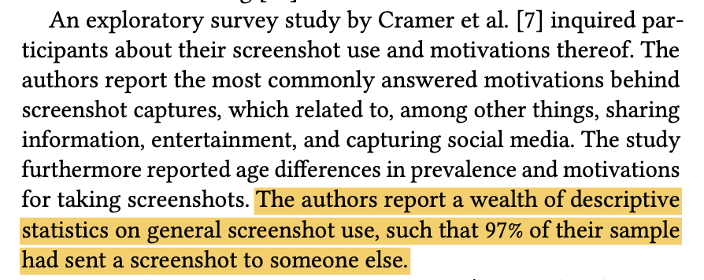
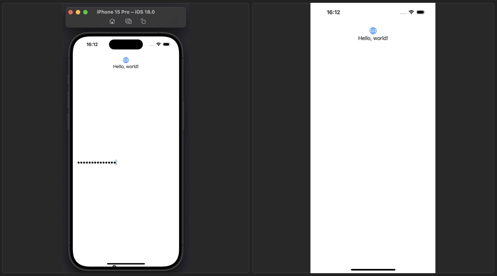
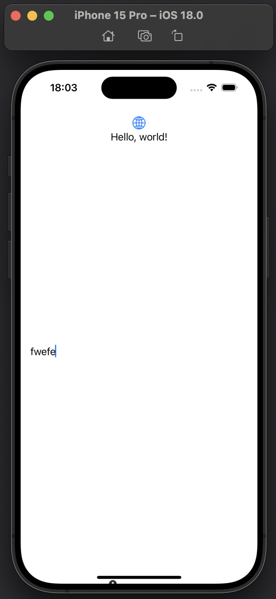
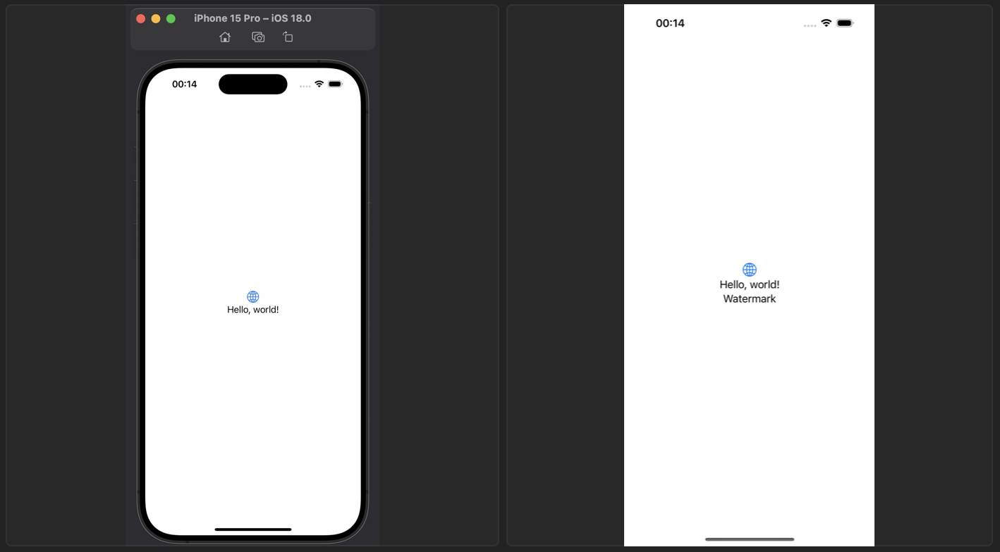

背景
在现代数字交流中，屏幕截图成为一种常见的工具，不仅用于记录和保存内容，还广泛用于分享信息。一篇题为《Why do people take Screenshots on their Smartphones?》1 的研究论文指出，有97%的受访者曾将截图发送给他人。这一数据表明，屏幕截图不仅仅是个人记录的手段，更是一种重要的社交互动方式。通过截图，用户能够快速分享对话、通知或有用的内容，从而在信息传播和交流中发挥关键作用。

然而，对于这样高比例的分享行为，用户可能的目的有：
- 认为当前屏幕的内容有趣，想要分享给其他人；
- 认为当前屏幕的内容不符合预期，想要反馈给开发者；
于是，我们可以从中做出这些事：
- 在用户截图时将品牌 logo 放置在不影响其他内容的地方，提高品牌宣传力；
- 将屏幕截图中的敏感信息隐藏起来，防止这些内容暴露给其他人，保护用户隐私；
- 在隐私协议允许范围内将诊断信息隐藏在截图中，从而更好地优化产品可能遇到的问题；
因此，接下来我们将开始研究实现方式。
使用 mask 隐藏 / 显示信息
本质上来讲，我们如果做到了可以在截屏时隐藏信息，那也就同样做到了显示信息，我们可以通过隐藏 / 显示蒙板的内容来控制实际内容的显示。对于 SwiftUI，有以下代码：
content
.mask {
ZStack {
Color.white
HideWhenTakingScreenshot {
Color.black
}
}
.compositingGroup()
.luminanceToAlpha()
}
假设我们已经实现了 HideWhenTakingScreenshot 中的内容，在屏幕截图时隐藏 Color.black ，对于 content ，也就相当于在屏幕截图时显示了，UIKit 同理。
在屏幕截图时隐藏信息
经过层层过滤，其实我们的真实需求是如何在屏幕截图时隐藏信息。
UITextField 的神奇作用
说到隐私保护，我们不得不想起当用户在密码框中输入密码时作为 iOS 系统级的保护，他会在用户截屏时自动隐藏密码输入框，如以下代码所示：
struct PasswordTextView: UIViewRepresentable {
@Binding var password: String?
func makeUIView(context: Context) -> UITextField {
let textField = UITextField()
textField.isSecureTextEntry = true
return textField
}
func updateUIView(_ uiView: UITextField, context: Context) {
uiView.text = password
}
}
这是一个最简单的用 UIKit 实现的密码框，可以将这个 PasswordTextView 添加到 SwiftUI 视图中，于是我们发现，当输入一些密码后并截图，密码框会在截图中消失不见。

那么这是如何做到的呢？我意识到一定是 isSecureTextEntry 这个属性在作祟，因为只要去掉这一行，截图消失这一效果将不再起作用。
于是我们可以使用 LLDB 命令找到 setSecureTextEntry: 这个方法调用的具体位置。
(lldb) image lookup -n "-[UITextField setSecureTextEntry:]"
1 match found in /Library/Developer/CoreSimulator/Volumes/iOS_22A5297f/Library/Developer/CoreSimulator/Profiles/Runtimes/iOS 18.0.simruntime/Contents/Resources/RuntimeRoot/System/Library/PrivateFrameworks/UIKitCore.framework/UIKitCore:
Address: UIKitCore[0x00000000011406bc] (UIKitCore.__TEXT.__text + 18073272)
Summary: UIKitCore`-[UITextField setSecureTextEntry:]
看起来这发生在 UIKitCore.framework ，将这个文件在反编译软件里进行反编译后，并找到 -[UITextField setSecureTextEntry:] ，于是得到这个方法实现的伪代码：
/* @class UITextField */
-(int)setSecureTextEntry:(int)arg2 {
r2 = arg2;
r1 = arg1;
r31 = r31 - 0x30;
var_10 = r20;
stack[-24] = r19;
saved_fp = r29;
stack[-8] = r30;
r20 = r2;
r19 = arg0;
[arg0 textInputTraits];
r0 = loc_18c2b3a10();
var_18 = r0;
if ([r0 isSecureTextEntry] != r20) {
r2 = r20;
[var_18 setSecureTextEntry:r2];
[r19 _didChangeSecureTextEntry];
}
r0 = var_18;
if (((stack[-8] ^ stack[-8] * 0x2) & 0x40000000) != 0x0) {
asm { brk #0xc471 };
r0 = loc_1868d24b4(r0, r1, r2);
}
else {
r0 = loc_18c2b3bb0();
}
return r0;
}
从这段伪代码中可以看出，其中最具嫌疑的是 17 行的 [var_18 setSecureTextEntry:r2]; 和 18 行的 [r19 _didChangeSecureTextEntry]; ，我们可以先排除 18 行的影响。因我们已知 11 行 r19 = arg0 即汇编代码中 mov x19, x0 ，所以这里的 r19 相当于当前 UITextField 实例。故这一行实际是在调用 [UITextField _didChangeSecureTextEntry] 。于是我们在这行打上断点：
(lldb) b -[UITextField _didChangeSecureTextEntry]
Breakpoint 1: where = UIKitCore`-[UITextField _didChangeSecureTextEntry], address = 0x0000000185d95714
运行代码，直到程序停在断点位置，随后使用命令：
(lldb) thread return
直接返回当前函数。然后继续运行代码，我们可以看到文本框的密码特性将不再生效，截图也不再隐藏，于是我们断定具体生效位置是在 [UITextField _didChangeSecureTextEntry] 内部。

证明
在源代码中我们使用 Objective-C 定义 SWTextField ，继承 UITextField ，声明 _didChangeSecureTextEntry 并覆写 isSecureTextEntry get 方法：
@interface SWTextField : UITextField
- (void)_didChangeSecureTextEntry;
@end
@implementation SWTextField
- (BOOL)isSecureTextEntry {
return YES;
}
@end
然后将 PasswordTextView 改成：
struct PasswordTextView: UIViewRepresentable {
@Binding var password: String?
func makeUIView(context: Context) -> UITextField {
let textField = SWTextField()
textField._didChangeSecureTextEntry()
return textField
}
func updateUIView(_ uiView: UITextField, context: Context) {
uiView.text = password
}
}
即可看到能够证明 _didChangeSecureTextEntry 方法是有效的。
Dive into [UITextField _didChangeSecureTextEntry]
回到断点 [UITextField _didChangeSecureTextEntry，我们可以在 Xcode 中看到：
UIKitCore`-[UITextField _didChangeSecureTextEntry]:
0x185d95714 <+0>: sub sp, sp, #0x50
0x185d95718 <+4>: stp x24, x23, [sp, #0x10]
0x185d9571c <+8>: stp x22, x21, [sp, #0x20]
0x185d95720 <+12>: stp x20, x19, [sp, #0x30]
0x185d95724 <+16>: stp x29, x30, [sp, #0x40]
0x185d95728 <+20>: add x29, sp, #0x40
0x185d9572c <+24>: mov x19, x0
0x185d95730 <+28>: bl 0x1867a1ac0 ; objc_msgSend$_setNeedsStyleRecalc
0x185d95734 <+32>: mov x0, x19
0x185d95738 <+36>: bl 0x1867acb20 ; objc_msgSend$_shouldObscureInput
0x185d9573c <+40>: mov x20, x0
0x185d95740 <+44>: adrp x22, 417875
0x185d95744 <+48>: add x22, x22, #0xa48 ; _MergedGlobals + 132
0x185d95748 <+52>: ldrsw x8, [x22, #0x40]
0x185d9574c <+56>: ldr x0, [x19, x8]
0x185d95750 <+60>: mov x2, x20
0x185d95754 <+64>: bl 0x18688aae0 ; objc_msgSend$setDocumentObscured:
0x185d95758 <+68>: mov x0, x19
0x185d9575c <+72>: bl 0x18675d0a0 ; objc_msgSend$_fieldEditor
0x185d95760 <+76>: bl 0x18607f9d0 ; symbol stub for: objc_claimAutoreleasedReturnValue
0x185d95764 <+80>: mov x21, x0
0x185d95768 <+84>: mov x0, x19
0x185d9576c <+88>: bl 0x18683da20 ; objc_msgSend$isSecureTextEntry
0x185d95770 <+92>: mov x2, x0
0x185d95774 <+96>: mov x0, x21
0x185d95778 <+100>: bl 0x1868a9e20 ; objc_msgSend$setSecureTextEntry:
0x185d9577c <+104>: bl 0x18607fb50 ; symbol stub for: objc_release_x21
0x185d95780 <+108>: mov w8, #0x12 ; =18
0x185d95784 <+112>: cmp w20, #0x0
0x185d95788 <+116>: csel w21, w8, wzr, ne
0x185d9578c <+120>: ldrsw x8, [x22]
0x185d95790 <+124>: ldr x0, [x19, x8]
-> 0x185d95794 <+128>: bl 0x186844600 ; objc_msgSend$layer
0x185d95798 <+132>: bl 0x18607f9d0 ; symbol stub for: objc_claimAutoreleasedReturnValue
0x185d9579c <+136>: mov x22, x0
0x185d957a0 <+140>: mov x2, x21
0x185d957a4 <+144>: bl 0x186889ba0 ; objc_msgSend$setDisableUpdateMask:
0x185d957a8 <+148>: bl 0x18607fb5c ; symbol stub for: objc_release_x22
0x185d957ac <+152>: adrp x24, 371432
0x185d957b0 <+156>: ldr x0, [x24, #0x6d8]
0x185d957b4 <+160>: bl 0x1867d0b80 ; objc_msgSend$activeInstance
0x185d957b8 <+164>: bl 0x18607f9d0 ; symbol stub for: objc_claimAutoreleasedReturnValue
0x185d957bc <+168>: mov x21, x0
0x185d957c0 <+172>: bl 0x186833120 ; objc_msgSend$inputDelegateManager
0x185d957c4 <+176>: bl 0x18607f9d0 ; symbol stub for: objc_claimAutoreleasedReturnValue
0x185d957c8 <+180>: mov x22, x0
0x185d957cc <+184>: bl 0x186840c00 ; objc_msgSend$keyInputDelegate
0x185d957d0 <+188>: bl 0x18607f9d0 ; symbol stub for: objc_claimAutoreleasedReturnValue
0x185d957d4 <+192>: mov x23, x0
0x185d957d8 <+196>: bl 0x18607fb68 ; symbol stub for: objc_release_x23
0x185d957dc <+200>: bl 0x18607fb5c ; symbol stub for: objc_release_x22
0x185d957e0 <+204>: bl 0x18607fb50 ; symbol stub for: objc_release_x21
0x185d957e4 <+208>: cmp x23, x19
0x185d957e8 <+212>: b.ne 0x185d95808 ; <+244>
0x185d957ec <+216>: ldr x0, [x24, #0x6d8]
0x185d957f0 <+220>: bl 0x1867d0b80 ; objc_msgSend$activeInstance
0x185d957f4 <+224>: bl 0x18607f9d0 ; symbol stub for: objc_claimAutoreleasedReturnValue
0x185d957f8 <+228>: mov x21, x0
0x185d957fc <+232>: mov x2, x19
0x185d95800 <+236>: bl 0x186888640 ; objc_msgSend$setDelegate:
0x185d95804 <+240>: bl 0x18607fb50 ; symbol stub for: objc_release_x21
0x185d95808 <+244>: adrp x8, 371433
0x185d9580c <+248>: ldr x21, [x8, #0x398]
0x185d95810 <+252>: mov x0, x19
0x185d95814 <+256>: bl 0x186878b60 ; objc_msgSend$semanticContentAttribute
0x185d95818 <+260>: mov x2, x0
0x185d9581c <+264>: mov x0, x21
0x185d95820 <+268>: bl 0x1868e3b40 ; objc_msgSend$userInterfaceLayoutDirectionForSemanticContentAttribute:
0x185d95824 <+272>: cmp x0, #0x1
0x185d95828 <+276>: b.ne 0x185d95848 ; <+308>
0x185d9582c <+280>: mov x0, x19
0x185d95830 <+284>: bl 0x1868d07c0 ; objc_msgSend$textAlignment
0x185d95834 <+288>: cmp x0, #0x4
0x185d95838 <+292>: b.ne 0x185d95848 ; <+308>
0x185d9583c <+296>: mov x0, x19
0x185d95840 <+300>: mov w2, #0x2 ; =2
0x185d95844 <+304>: bl 0x1868b1ba0 ; objc_msgSend$setTextAlignment:
0x185d95848 <+308>: cbz w20, 0x185d95860 ; <+332>
0x185d9584c <+312>: mov x0, x19
0x185d95850 <+316>: bl 0x1868786c0 ; objc_msgSend$selectionRange
0x185d95854 <+320>: cbz x1, 0x185d95860 ; <+332>
0x185d95858 <+324>: mov x0, x19
0x185d9585c <+328>: bl 0x186876fc0 ; objc_msgSend$selectAll
0x185d95860 <+332>: mov x0, x19
0x185d95864 <+336>: bl 0x1868359e0 ; objc_msgSend$interactionAssistant
0x185d95868 <+340>: bl 0x18607f9d0 ; symbol stub for: objc_claimAutoreleasedReturnValue
0x185d9586c <+344>: str x0, [sp, #0x8]
0x185d95870 <+348>: bl 0x1868de180 ; objc_msgSend$updateDisplayedSelection
0x185d95874 <+352>: ldr x0, [sp, #0x8]
0x185d95878 <+356>: ldp x29, x30, [sp, #0x40]
0x185d9587c <+360>: ldp x20, x19, [sp, #0x30]
0x185d95880 <+364>: ldp x22, x21, [sp, #0x20]
0x185d95884 <+368>: ldp x24, x23, [sp, #0x10]
0x185d95888 <+372>: add sp, sp, #0x50
0x185d9588c <+376>: b 0x18607fb08 ; symbol stub for: objc_release
对于这段程序，有 3 处位置值得注意：
- 18行的
setDocumentObsecured: - 27行的
setSecureTextEntry: - 38行的
setDisableUpdateMask:
为了筛选这些代码是哪里真正有效，我们可以单步调试到这些行，然后使用命令
(lldb) thread return
跳过其后的代码，通过当前截屏是否正常生效来确定运行过的代码是否起作用。
无论我们定位到 18 行还是 27 行，在使用 thread return 命令后都会出现在密码输入框输入的文字是 “·"，而截屏后的这些字符并不会消失。直到第 38 行。
于是我们断点到第 38 行，输入命令
(lldb) po $x0
<CALayer:0x600000287100; position = CGPoint (0 0); bounds = CGRect (0 0; 0 0); delegate = <_UITextLayoutCanvasView: 0x111021eb0; frame = (0 0; 0 0); layer = <CALayer: 0x600000287100>>; opaque = YES; allowsGroupOpacity = YES; >
得知当前调用 setDisableUpdateMask: 是 CALayer 。然后再尝试断点第 34 行，并再次输入
(lldb) po $x0
<_UITextLayoutCanvasView: 0x106021100; frame = (0 0; 0 0); layer = <CALayer: 0x6000002884c0>>
得知对应 view 是 _UITextLayoutCanvasView ，并跟据反编译结果
[*(r19 + sign_extend_64(*(int32_t *)0x1e68ec204)) layer];
然后查找地址 0x1e68ec204 后，发现是原 UITextField 的一个子 view：-[UITextField _textCanvasView]。
因此我有一个大胆的猜测，只需调用任意 CALayer 的 setDisableUpdateMask: 方法即可在截屏隐藏当前 CALayer 的内容，其对应参数是存储在 x2 寄存器存储的值。而 x2 的值是在 29 行 mov w8, #0x12 赋值的。于是猜测该方法的参数是一个枚举值。在这里该值为 0x12 。
因此，给 CALayer 扩展该方法：
@interface CALayer ()
- (void)setDisableUpdateMask:(unsigned int)aValue;
@end
然后我们可以实现之前未完成的 HideWhenTakingScreenshot ，并给 setDisableUpdateMask 方法传入参数0x12 ：
struct HideWhenTakingScreenshot: UIViewRepresentable {
var color: UIColor = .black
func makeUIView(context: Context) -> UIView {
let view = UIView()
view.layer.setDisableUpdateMask(0x12)
return view
}
func updateUIView(_ uiView: UIView, context: Context) {
uiView.backgroundColor = color
}
}
最后，只需要将 content 实现为想要的效果即可，比如 Text("Watermark") ：
Text("Watermark")
.mask {
ZStack {
Color.white
HideWhenTakingScreenshot()
}
.compositingGroup()
.luminanceToAlpha()
}
